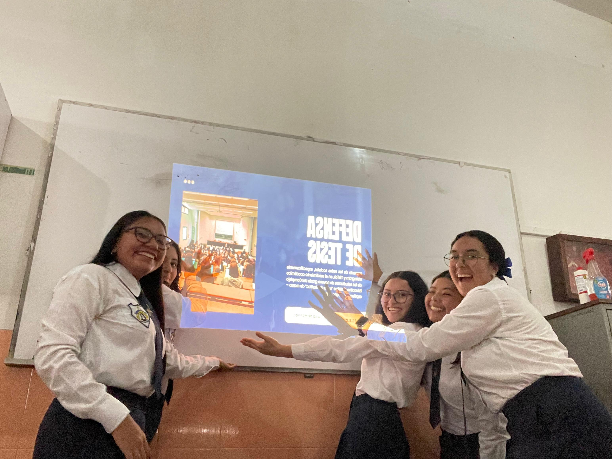
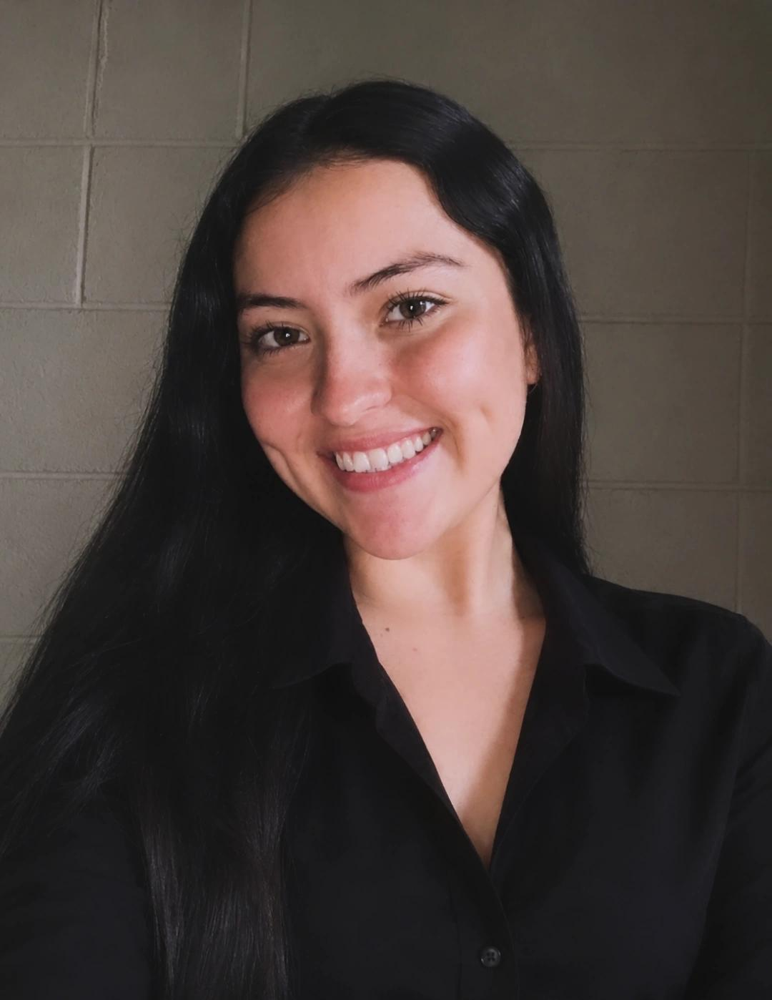
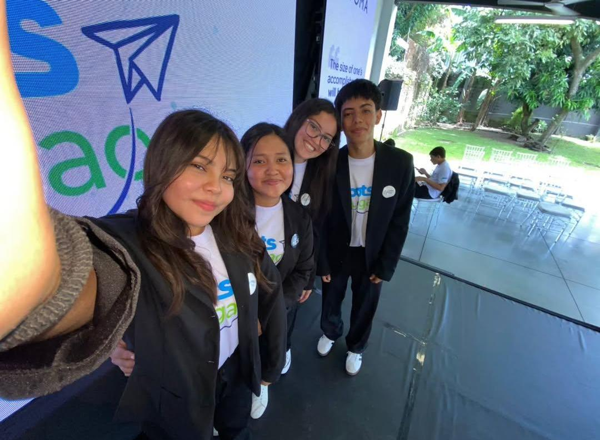
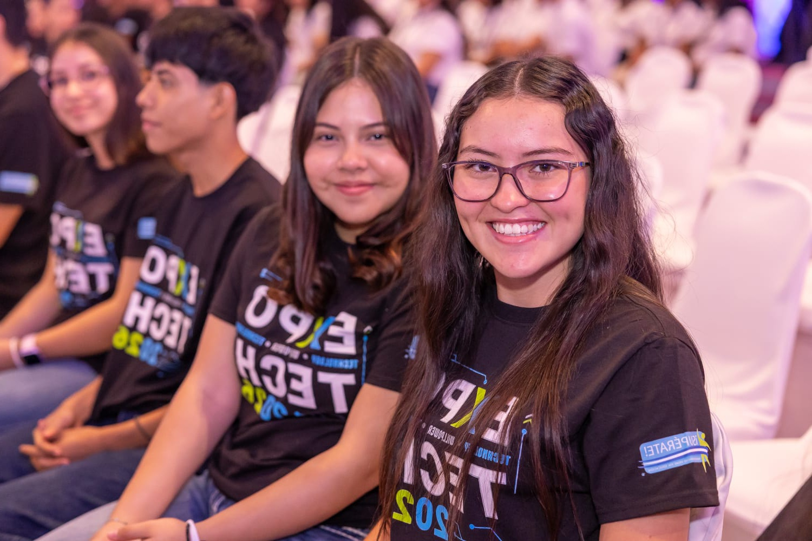
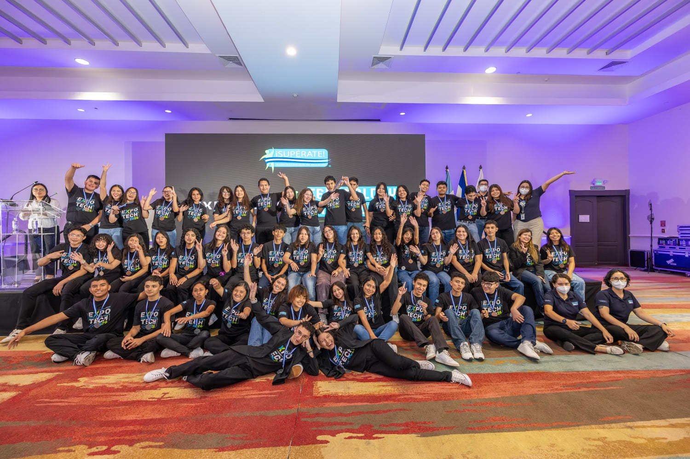

I learn, I face challenges,
and I keep growing
I am Marianela Sofía Avelar Guardado, a third-year scholarship student at Centro ¡Supérate! Fundación Poma.

ABOUT ME
I am a young woman with dreams, goals, and a strong desire to learn. Every experience I have had has helped me understand myself better, overcome my limits, and slowly become the person I want to be.

SKILLS
Responsibility
Teamwork
Perseverance
Digital Skills
Creativity and Innovation
Adaptability
PROJECTS
Work I'm proud of

My experience defending my thesis
Defending my thesis was a very important experience
for me because it allowed me to put my research,
organizational, and teamwork skills into practice.
My role consisted of preparing the theoretical
framework and conclusions, as well as reviewing
the spelling and writing of the project. I also
had the opportunity to present and defend our
work together with my classmates.
This experience helped me gain more confidence
when speaking in public, learn to take responsibility,
and recognize the importance of teamwork in
achieving a common goal.

My Experience at Expo Poma
Expo Poma was an experience that taught me a lot
about teamwork. During the project, we faced
difficulties with communication, organization,
and empathy, but despite these challenges,
we managed to present our work.
My role was to work on the branding, which was
challenging because at times I felt I did not
have enough support from my teammates. I became
overwhelmed when I struggled to come up with
ideas for the logo. However, I kept trying and
learned that communication, empathy, and
collaboration are essential for achieving
good results as a team.


My experience at Expo Tech
Expo Tech was a challenge for me because when
I changed to the morning schedule, I also had
to join a new group and adapt to a project I
did not know much about. At the same time,
I had to prepare to retake my Excel certification,
so I had to learn how to manage my time and
balance both responsibilities.
Although I felt a little lost at first, I found
ways to support my new team. I helped my classmate
Adriana with the presentation and created the
question bank. This experience taught me to
adapt to changes, manage my time better, and
stay committed even when facing several
challenges at the same time.


Let's talk
I'm a student passionate about learning and growing.
If you would like to get in touch with me,
feel free to contact me.
✉
Email: sofiaguardado731@gmail.com
☎
Phone: 8967-5543
●
Location: El Salvador, La Libertad